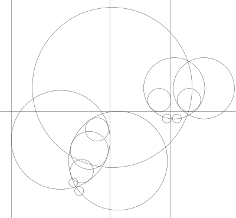

Hi,
My name is FINN WOO
A versatile Content Designer with an experience in various industries.
Web Design

Smart Sejong UX/UI, Graphic
Worked on website maintenance for Sejong City’s City Hall with traffic site rank of 658,664 in global Internet traffic and engagement. Designed and built responsive website; coded with CSS3, HTML5 and JavaScript; contributed from planning process; and maintained clients’ websites from front-end.
Read morePhotoShop
Illustrator
Illustrator
HTML5
CSS3
CSS3
Skills
- HTML
- CSS
- Responsive Web
- JavaScript
- UX/UI Design and Prototyping
- UX Writing
- Bootstrap Framework
- WordPress
- SCSS and LESS
Tools
- Photoshop
- Illustrator
- InDesign
- Adobe XD
- Figma
- Visual Studio Code
- GitHub
- MS Office
- Sublime Text
- Eclipse